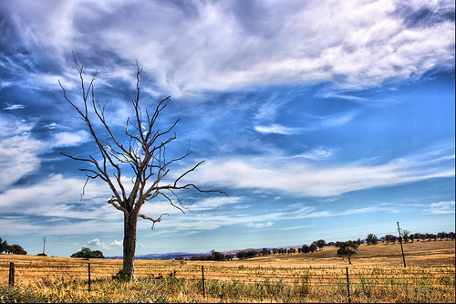
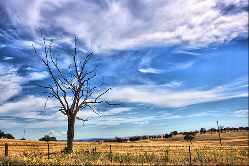
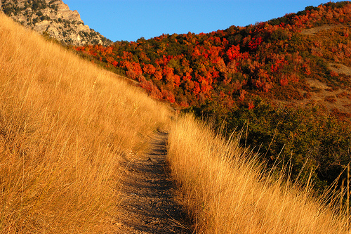
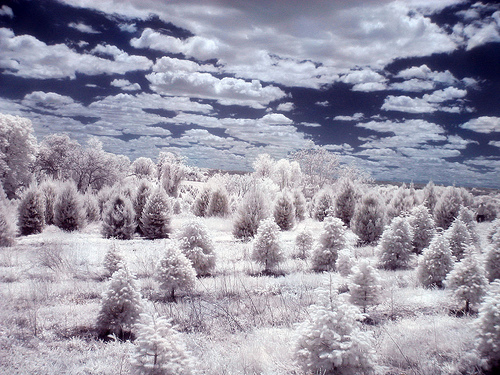
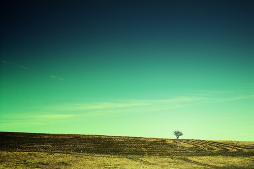
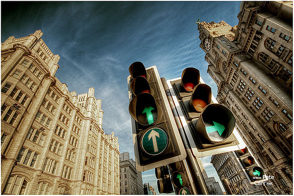

jPanels Demo
 
The Widowmaker
Mountain Trail
Tree of Light
Walk to Infinity
Rain Drop
Orders of Infinity
Minimal
Motion
Arabian Night
Fishing Boats
Extremely Loud and Incredibly Close
The tree that refused to believe it was winter
At the lights
jPanels Demo
About
jPanels is a lightweight mosaic plugin that is built on jQuery. It takes 13 photos and displays them as an interactive mosaic. The plugin randomly chooses a maximum of 4 photos to "feature" by displaying it larger than the other photos. This option can be turned off by commenting out a few lines of javascript. It is highly customizable to the user's preference. This is a work in progress, and updates will be pushed routinely.
The source files can be found here.
Credits
The sample photoset was obtained through 50 Stunning Images From Flickr Under Creative Commons from thefuturebuzz.com.
Photographer Credits:
- The Widowmaker by aussiegall
- Mountain Trail by a4gpa
- Tree of Light by jphilipson
- Walk to Infinity by lightknight
- Rain Drop by play4smee
- Orders of Infinity by zachstern
- Minimal by flyzipper
- Motion by kompott
- Arabian Night by creativesam
- ishing Boats by santimb
- Extremely Loud and Incredibly Close by matt.hintsa
- The tree that refused to believe it was winter by EJP_photo
- At the lights by petecarr